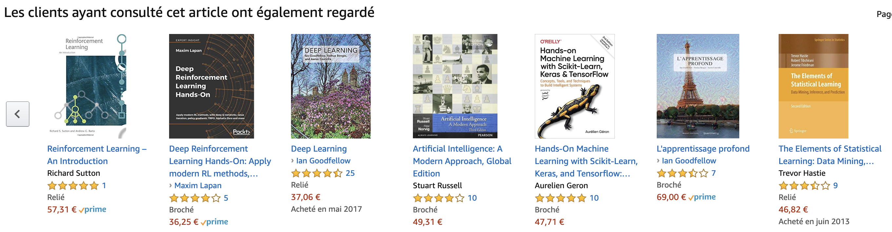
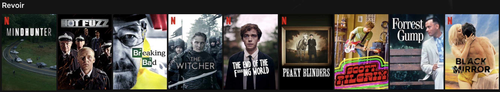
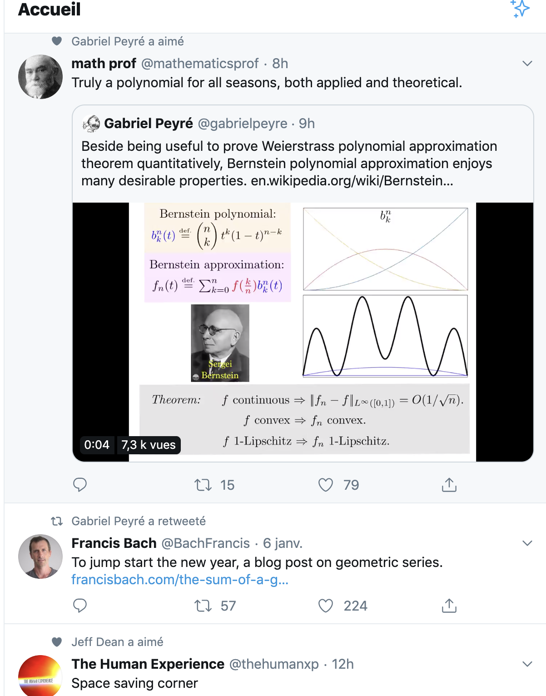
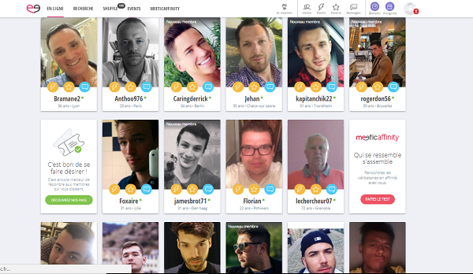

class: center, middle # Recommender Systems Thibault Allart --- # Agenda 1. Introduction to recommender systems and first steps into bandit. 2. Contextual bandit. 3. Matrix factorization and deep recommender system. 4. Historical sampling bias. 5. List recommendation, position based model and EM algorithm. 6. A first look into reinforcement learning. 7. Deploying and calling an API using Flask, Nginx and Docker. 8. Project. 9. Soutenances. --- # Introduction 1. The diversity of recommender systems. 2. Bandit framework. 3. Epsilon greedy algorithm. 4. Upper Confidence Bound algorithm. 5. Thompson sampling algorithm. 6. Non stationary rewards. 7. Delayed rewards. --- # The diversity of recommender systems. .center[ <img src="img/ldlc.png" style="height: 360px;" /> ] --- .center[ ] .centerleft[  ] .centerleft[ ] --- .center[ <img src="img/netflix1.png" style="width: 550px;" /> ] .center[  ] .center[ ] .center[ ] --- # The diversity of recommender systems. .center[ ] --- # The diversity of recommender systems. .center[  ] --- # The diversity of recommender systems. .center[ ] --- # The diversity of recommender systems. .center[  ] --- # The diversity of recommender systems. .center[ ] --- # Starting with a simpler problem Let's start to simplify the problem by assuming that: - We recommend only one item at the time - We have no informations (about the user, product, etc) - The rewards are stationary --- # Bandit framework .center[ ] <br> Start the first [notebook](https://github.com/thibaultallart/IA316-2020/blob/master/notebooks/1_bandits.ipynb). --- # Epsilon-greedy .centerleft[ <div lang="latex"> \\ REQUIRE: \epsilon \in [0,1] \\ \text{1. } \text{At round t,} \\ \text{2.} \ \ \ \ \text{with probability } \epsilon: \\ \text{3.} \ \ \ \ \ \ \ \ A_t \sim \text{Uniform}({1,\ldots,K}) \\ \text{4.} \ \ \ \ \text{with probability } 1-\epsilon: \\ \text{5.} \ \ \ \ \ \ \ \ A_t = \text{argmax}_{a \in {1,\ldots,K}}(Q_a) \\ </div> ] --- # UCB Optimistic in the face of uncertainty we play the arm with the higher Upper Confidence Bound. .center[ <div lang="latex"> A_t = \text{argmax}_a \bigg[ Q_t(a) + \sqrt{\frac{c\log t}{N_t(a)}} \bigg] </div> ] --- # Bayesian inference If you need a recap on Bayesian inference, you can look [here](https://ocw.mit.edu/courses/mathematics/18-05-introduction-to-probability-and-statistics-spring-2014/readings/). Recall that .center[ <div lang="latex"> \begin{align*} \text{Posterior probability } &\propto \text{ Likelihood } \times \text{ Prior probability} \\ f(\theta|x) &\propto f(x|\theta) \times f(\theta) \end{align*} </div> ] If prior and posterior are in the same probability distribution family they are then called conjugate distributions. A long list of conjugate prior can be found on [wikipedia](https://en.wikipedia.org/wiki/Conjugate_prior). --- # Thompson sampling .centerleft[ <div lang="latex"> \\ \text{REQUIRE: A distribution function f parametrized by } \theta \text{ and a priors } g \text{ on } \theta \text{ distribution. } \\ \text{1. } p^0(\theta|x) = g(\theta) \\ \text{2. } \text{At round t,} \\ \text{3.} \ \ \ \ \text{sample } (\theta'_a)_{a \in {1,\ldots,K}} \text{ from the posterior distribution } p^t. \\ \text{4.} \ \ \ \ \text{play } A_t = \text{argmax}_{a \in {1,\ldots,K}}(\theta'_a) \\ \text{5.} \ \ \ \ \text{update posterior distribution using observed reward, i.e. } \\ \text{ } \ \ \ \ \ p^{t+1}(\theta|x) = f(x|\theta) \times p^t(\theta|x) \\ </div> ] --- # Deepmind bsuite [bsuite](https://github.com/deepmind/bsuite) [paper](https://arxiv.org/pdf/1908.03568.pdf) [Notebook](https://github.com/thibaultallart/IA316-2020/blob/master/notebooks/1_bandit_with_bsuite.ipynb) --- <!-- .center[ <img src="img/mf.png" style="height: 260px;" /> ] <br> .center[ <div lang="latex"> \min_{U,V} \sum_{(u,i)\,\text{observés}} (R_{u,i}- (UV)_{u,i})^2 + \lambda \|U\|^2_F+ \lambda \|V\|^2_F </div> ] --> --- # References - Reinforcement Learning An introduction from Sutton and Barto [book](http://www.incompleteideas.net/book/the-book.html) - [lectures](http://chercheurs.lille.inria.fr/ekaufman/RL.html) from Kaufmann - Bandit Algorithms from Lattimore and Szepesvar [book](https://tor-lattimore.com/downloads/book/book.pdf) <!-- <div lang="latex"> \frac{1+sin(x)}{y} </div> -->